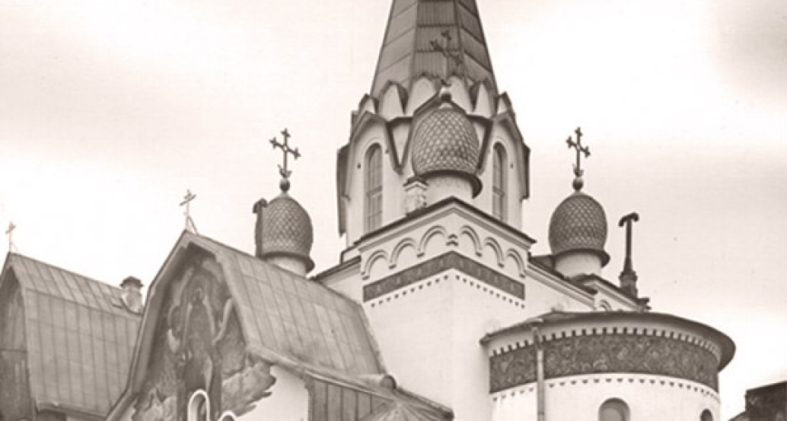

О Храме
Храм Святителя Петра митрополита Московского на Роменской улице
Комплекс каменных зданий был сооружен в 1911-1912 гг. по проекту епархиального архитектора, гражданского инженера А.П.Аплаксина, выдающегося мастера неорусского стиля.
Редкой особенностью архитектуры подворья является сочетание стилизованных деталей и композиции, свойственных зодчеству Древней Руси ("псковско-новгородскому", а также московских шатровых храмов XVI в.). Здания отличаются сложной ассиметричной композицией с завершениями необычной формы, высоким качеством отделки с применением монументальной живописи на фасадах.
История храма
 Подробнее об истории ХрамаПРЕСТОЛЬНЫЕ ПРАЗДНИКИ НАШЕГО ХРАМА
Даты - по новому стилю:
- Святителя Петра Митрополита Московского 3 января 6 сентября
- Пятидесятница (День Святой Троицы) 50-й день после Пасхи (всегда воскресение)
- Святителя Николая Мир Ликийских Чудотворца 19 декабря 22 мая
- Святой Равноапостольной Великой Княгини Ольги 24 июля